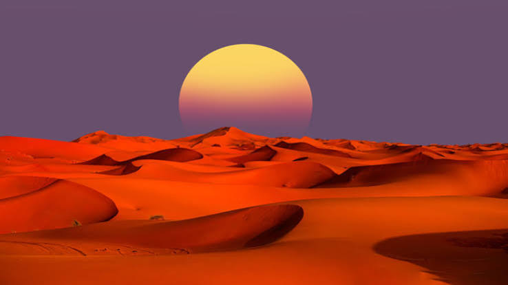
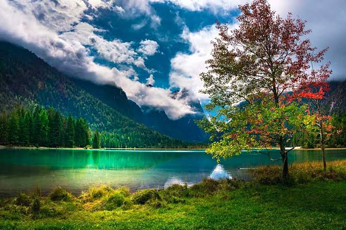
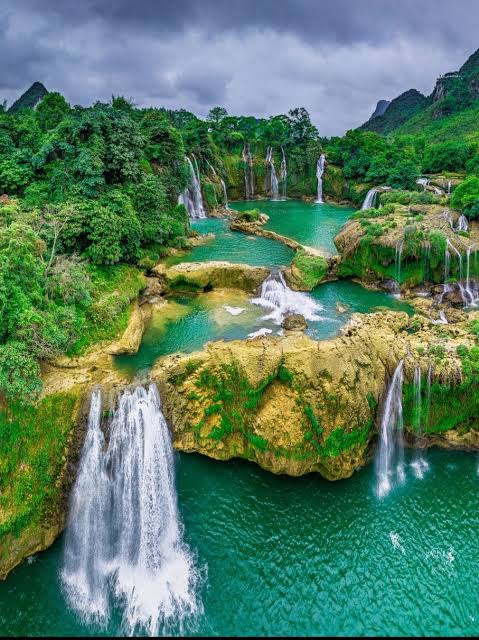

Колаж світлин
Наведіть курсор на фото для перегляду з 100% чіткістю
1. FadeInDown
2. BounceIn

3. ZoomIn

4. FlipInX
5. RotateIn

6. Pulse
Коментар творця:
Фото були зроблені не мною, але всі права захищені. МИ ПРОТИ ПІРАТСТВА!
Фото були зроблені не мною, але всі права захищені. МИ ПРОТИ ПІРАТСТВА!